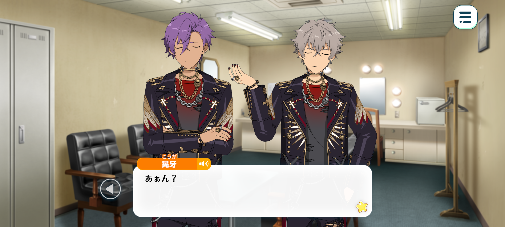
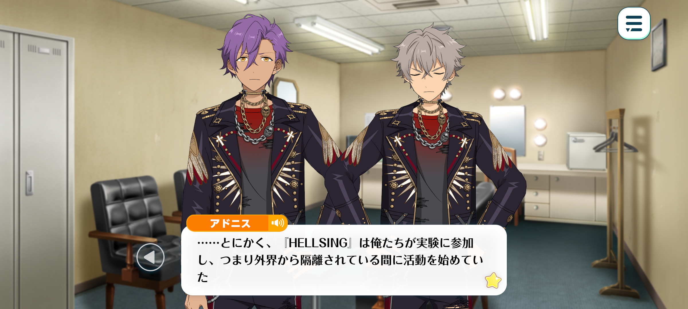

PSYCHOBREAK — Chapter 4


Adonis: I wonder what Sakuma-senpai is thinking.
Is this some sort of punishment? Is he trying to get back at me?
No, I mustn't doubt him... Knowing him, there must be a deeper meaning behind what he's doing.
Koga: Haa?
You give that stupid old man way too much credit. There's nothing goin' on in that head of his.
He just does whatever the hell he likes, then comes up with some bullshit afterwards and goes, “See? It was all part of the plan.” He's an idiot.
Adonis: As expected, you understand Sakuma-senpai very well, Oogami.
Koga: For a while, he was all I ever thought about, so…
I can spend as much time as I like thinkin’ about the version of him I've built in my head, but that doesn't mean it has anythin’ to do with the real him.
Adonis: …
Koga: Anyway, what're we gonna do about all this?
Adonis: I'm not sure. In fact, I was hoping to discuss that with you.
Yesterday, we came face-to-face with our own copies, HELLSING, at the AIIE testing facility.
Afterwards, once we had finished investigating the place, Sakuma-senpai gave us a plan of action.
He said that every cloud has a silver lining, so we should try to make the most of our current situation.
Koga: Hmph. I still reckon it'd be better to just get rid of HELLSING altogether.
But... They're almost indistinguishable from real people, and they seem to have minds of their own. I don't think I'd feel right about killin’ them.
Adonis: Indeed. That raises another important question surrounding AI.
Should artificial intelligence and robots be granted human rights?
If we refuse to recognise those rights and treat them as nothing more than means to an end, wouldn't that amount to a new form of slavery?
Koga: Nnh, I don't like thinkin' about complicated stuff like that. The HELLSING lot are surprisingly nice, and they do whatever we tell 'em to.
Sure, they've got foul mouths and terrible attitudes, but we can still control 'em with a remote. That's when you really remember they're just machines.
But the real question is, is it right to just throw those poor bastards away just ‘cos it's convenient for us? They're alive, well, I guess they aren't really alive, since they're machines, but still.
Adonis: Do machines have souls?
Koga: Dunno, really. But Sakuma-senpai figured they might, so he decided we shouldn't get rid of them. He said we couldn't just crush them underfoot for our own convenience.
Adonis: Sakuma-senpai is a kind person, after all.
Koga: Maybe he's just a coward. He's probably had enough of messin’ with other people's lives. The AIs might not be human, but even so...
If the person I loved more than anyone else were the one to destroy me, I'd be perfectly happy with that.

Adonis: ...Anyway, HELLSING began operating while we were taking part in the experiment. In other words, while we were cut off from the outside world.
As a radical, immoral unit, they've received tremendous support, particularly from long-time fans who were eager to see us return to that side of ourselves.
It seems Sakuma-senpai intends to take advantage of the situation.
His plan is to leave the former, rock-band side of our activities entirely to HELLSING—
...whilst UNDEAD focuses on the variety-show-oriented direction we've been pursuing ever since ES was established.
We need to keep our long-time fans happy while also winning over new ones. Sakuma-senpai intends to pursue both approaches without sacrificing either.
He probably sees this as our chance to turn things around after such a long period of decline.
Koga: So we're actually gonna split up the light and dark sides of ourselves, the two sides that were already on the verge of tearin’ us apart.
Normally, tryin’ something like that would just leave us stuck between the two, and we'd end up fallin’ apart anyway...
But this time, we've got a bunch of convenient robots who can take our place.
Copy puppets, I mean. Hmph.
Adonis: Copy puppets..?
I'm not entirely sure what you mean by that comparison, but I think HELLSING's usefulness was made abundantly clear from today's live performance.
Koga: Yeah. When Hasumi-senpai— I mean, Shitty Glasses, came bargin’ onto the stage and tried to attack us, I didn't know what the hell t’do.
Even he wouldn't understand what we’re up to.
Adonis: I wouldn't say he tried to attack us. Hasumi-senpai was worried about us.
Koga: Hmph. He's always been a nosy bastard. He's the sort who can't even leave a stray dog alone.
Adonis: I think that's true of quite a lot of people, though.
Koga: Anyway, Shitty Glasses is a normal human being, for better or worse. He couldn't even begin to comprehend that something as ridiculous as human-lookin’ robots are secretly runnin’ around.
Until these AI idols become widely known and accepted, nobody, not even him, should have any idea there’s somethin’ up.
Adonis: Indeed. For the time being, we're keeping their existence a secret. Even if we told people the truth, they'd only dismiss it as nonsense, and we'd risk eroding their trust.
I do feel a little guilty, as though we're deceiving our fans.
Koga: Yeah. So we should probably tell everyone sooner rather than later.
But now's not the time. We need t’deal with HELLSING first.
That's why us two have joined HELLSING for the time being. Partly because we're worried about leavin’ the AIs to their own devices, and partly so we can keep an eye on them.
Adonis: Indeed. So, to clarify, the arrangement is that we, along with the fake Sakuma-senpai and fake Hakaze-senpai, are taking charge of HELLSING's radical and immoral activities.
Meanwhile, the real Sakuma-senpai and real Hakaze-senpai are pursuing UNDEAD's variety-show-oriented direction, alongside the fake versions of Oogami and me.
Koga: The other lot seems to be doing pretty well, too. Our fakes haven’t got any shame, so.
They're actually on a live broadcast right now, and they're handlin’ the variety-show stuff pretty smoothly.
Adonis: Indeed. We still don't know whether this decision will prove to be a blessing or a curse—
But at least for now, things are going almost frighteningly well for us as idols.